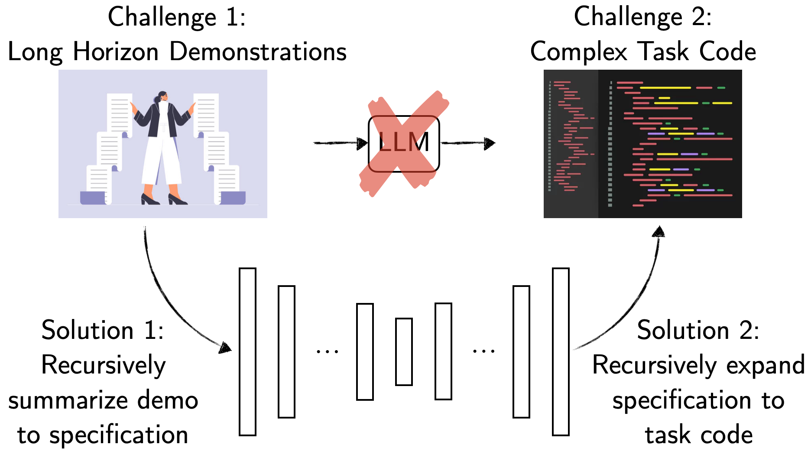
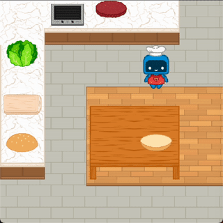
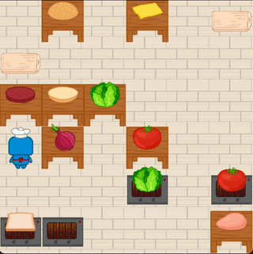
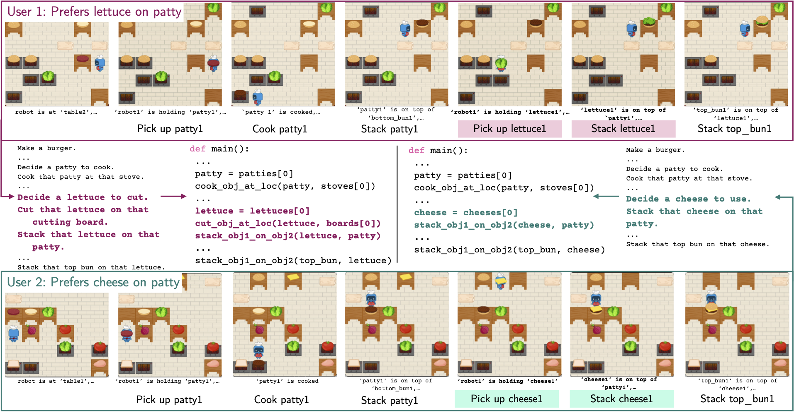
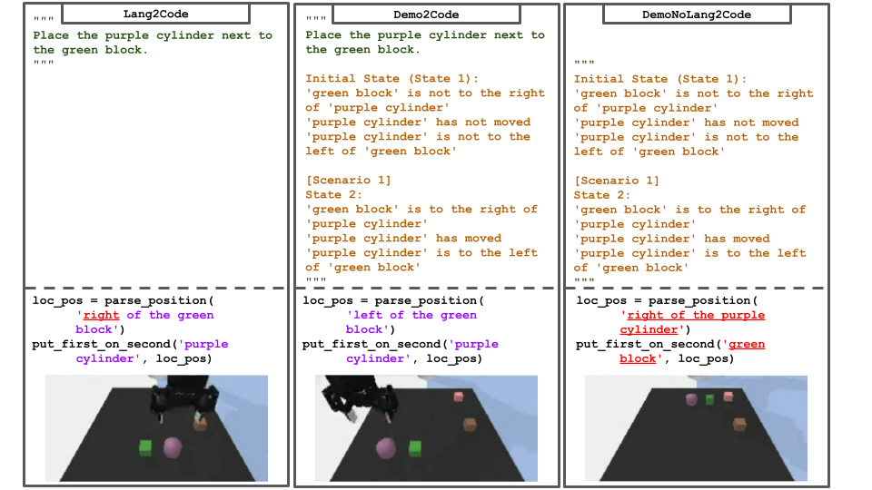
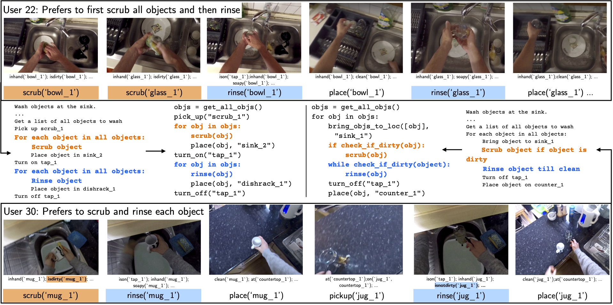

Method Overview

Demo2Code generates robot task code from language instructions and demonstrations through a two-stage process.
(1) Recursive Summarization: summarize demonstrations to task specifications
In stage 1, the LLM first summarizes each demonstration individually. Once all demonstrations are sufficiently summarized, they are then jointly summarized in the final step as the task specification.
In the example, the LLM is asked to perform some intermediate reasoning (e.g. identifying the order of the high-level action) before outputting the specification (starting at "Make a burger...")
(2) Recursive expansion: synthesize code from the task specification
In stage 2, given a task specification, the LLM first generates high-level task code that can call undefined functions. It then recursively expands each undefined function until eventually terminating with only calls to the existing APIs imported from the robot's low-level action and perception libraries.
In the example, the function cook_obj_at_loc is an initially undefined function that the LLM calls when it first generates the high-level task code. In contrast, the function move_then_pick is a function that only uses existing available APIs.
Demo2Code + Robotouille
Demo2Code can successfully complete various cooking task while accommodating to a user's preference.
Code Execution Result



Language Instruction
"Make a burger"
Preference Shown In Demos
With a patty and a lettuce
With a patty and a lettuce and a tomato
With a patty and cheese
Language Instruction: "Make a burger"
Preference Shown In Demos: With a patty and a lettuce
Lang: "Make a burger"
Pref: With a patty and a lettuce
Lang: "Make a burger"
Pref: With a patty and cheese
Outperforms on multiple tasks!
Demo2Code is compared against two other methods.
- Lang2Code: a prior work CodeAsPolicies, which generates code only from language instruction
- DemoNoLang2Code: an ablation method, which generates code from demonstrations only without a language instruction
Robotouille: Cooking Task Simulator

Demo2Code can infer different users' preferences.
In this Robotouille example, Demo2Code is able to summarize demonstrations and identify different users' preferences on how to make a burger (e.g. whether to include lettuce or cheese). Then, it generates personalized burger cooking code to use the user's preferred ingredients.
Tabletop Manipulation Simulator

Demo2Code can ground ambiguous language instruction.
In this tabletop example, Demo2Code successfully extracts specificity in tabletop tasks. Although the language instruction just ambiguously says "next to", it correctly infers from the goal is "left of". In contrast, Lang2Code lacks demonstrations and randomly chooses a spatial location while DemoNoLang2Code lacks context in what object to move.
EPIC-Kitchens: Real-Life Chores

Demo2Code can apply to real-world video demonstrations and identify different users' styles.
In this tabletop example, Demo2Code successfully extracts specificity in tabletop tasks. Although the language instruction just ambiguously says "next to", it correctly infers from the goal is "left of". In contrast, Lang2Code lacks demonstrations and randomly chooses a spatial location while DemoNoLang2Code lacks context in what object to move.
Paper
Demo2Code: From Summarizing Demonstrations to Synthesizing Code via Extended Chain-of-Thought
Huaxiaoyue Wang, Gonzalo Gonzalez-Pumariega, Yash Sharma, Sanjiban Choudhury
@misc{wang2023demo2code,
title={Demo2Code: From Summarizing Demonstrations to Synthesizing
Code via Extended Chain-of-Thought},
author={Huaxiaoyue Wang and Gonzalo Gonzalez-Pumariega and Yash Sharma
and Sanjiban Choudhury},
year={2023},
eprint={2305.16744},
archivePrefix={arXiv},
primaryClass={cs.RO}
}
Acknowledgements
We sincerely thank Nicole Thean (@nicolethean) for creating our art assets for Robotouille!